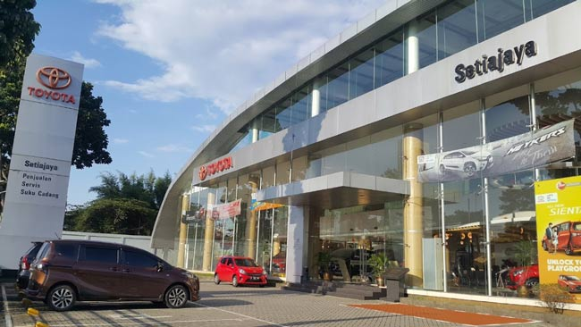

UI/UX & Web Development
UI/UX & Frontend Developer Intern
PT Sinergi Cahaya Utama Indah (Qutab) — Gedung ZIS Indosat
December 2025 – March 2026
- Developed React.js web applications and dashboards, including affiliate dashboard, admin panel, referral system, and dynamic pricing modules to support business operations.
- Contributed to the development of qurbantanpabatas.id and scalev.id as mobile-first landing pages with responsive UI implementation.
- Contributed to interface design through user flows, information architecture, wireframing, and stakeholder-driven design iterations.
- Prepared business and technical documentation including flowcharts, organizational structure diagrams, and business process flows for the internship final report.
React.js
Vite
JavaScript
HTML/CSS
Figma
Draw.io
Responsive Design

IT Support & Digital Solutions
IT Support Intern
PT American Standard Indonesia (LIXIL Group)
August 2025 – December 2025
- Contributed to the AI Security Risk Analyzer, including data preparation, model evaluation, security risk classification, and feature development based on ISO/IEC 27001 and NIST SP 800-30 frameworks.
- Analyzed and structured security findings into actionable risk information to support security risk assessment and reporting.
- Managed IT asset inventory, disposal inspection, HDD backup and sorting, data erasure, CCTV warehouse HDD management, and asset auction/disposal administration.
- Developed Web Inventory Tinta and Web Inventory Disposal System as internal web tools to support IT asset and inventory operations and reduce reliance on manual processes.
- Worked with PostgreSQL and REST APIs to support application data management and system integration.
- Provided troubleshooting support across multiple departments, including HTTPS/SSL certificate issues, printers, LAN configuration, attendance machines, and CoreTax user ID issues.
- Supported company training events through event preparation, team coordination, photo documentation, and post-event content editing.
PostgreSQL
REST API
Python
JavaScript
Windows
LAN/Network
ISO 27001
NIST SP 800-30
IT Asset Management
IT Risk & Technology Management
IT Risk Analyst & Technology Project Contributor
PT Square Gate One
Professional Project
- Contributed to technology-focused initiatives involving IT risk analysis, governance, business process improvement, and digital solutions.
- Applied analytical thinking and technology skills to support risk identification, documentation, and process improvement.
- Supported technology-driven business needs through data analysis and structured documentation of IT processes and requirements.
- Collaborated across technology and business perspectives to connect technical solutions with operational and management needs.
AI & Risk Analysis
IT Governance
Business Process
Documentation
Data Analysis
Technology Management

Data & Administrative Operations
Records Digitalization Intern
PT Toyota Setiajaya Mobilindo Cibubur
2022
- Performed SAP master data input, updates, and management for sales and service records with a focus on accuracy and data consistency.
- Conducted data cleansing and validation to improve master data reliability and integrity across operational workflows.
- Digitalized and converted physical document archives into digital records to improve data accessibility and document organization.
- Supported administrative recapitulation, maintained iCare dashboard data, and coordinated documentation across customer, sales, and administrative workflows.
- Provided basic IT support for printer and LAN issues in the operational environment.
SAP
Microsoft Excel
Microsoft Word
Google Sheets
Data Entry
Data Validation
Digital Archiving